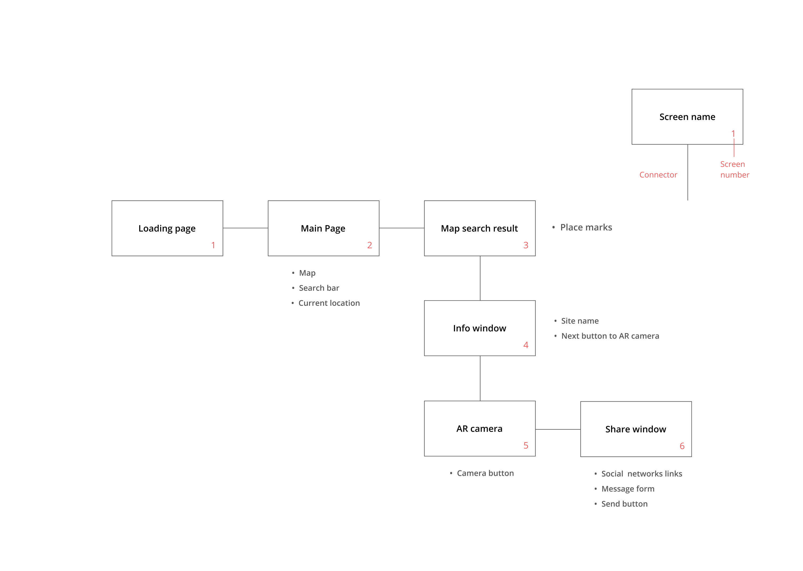
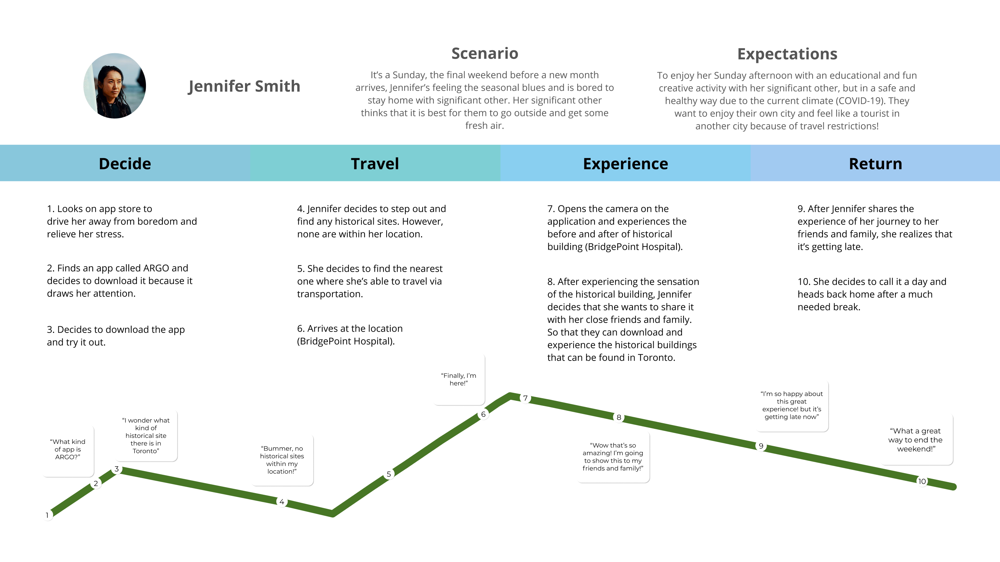
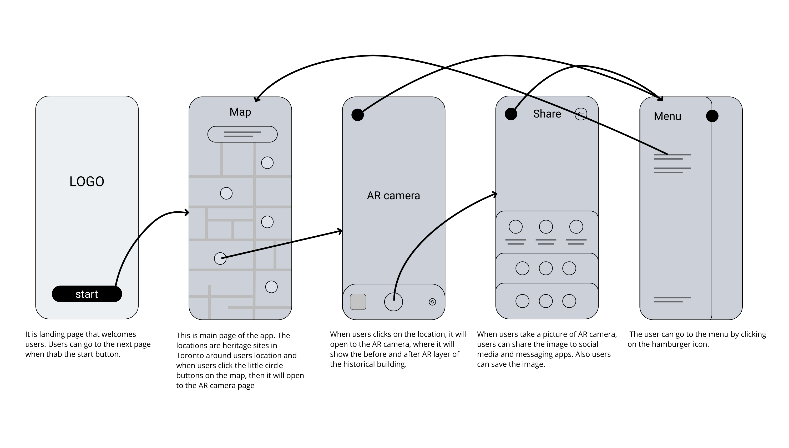
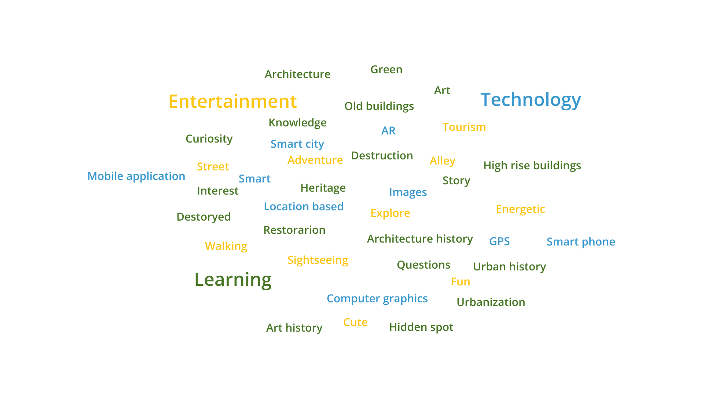
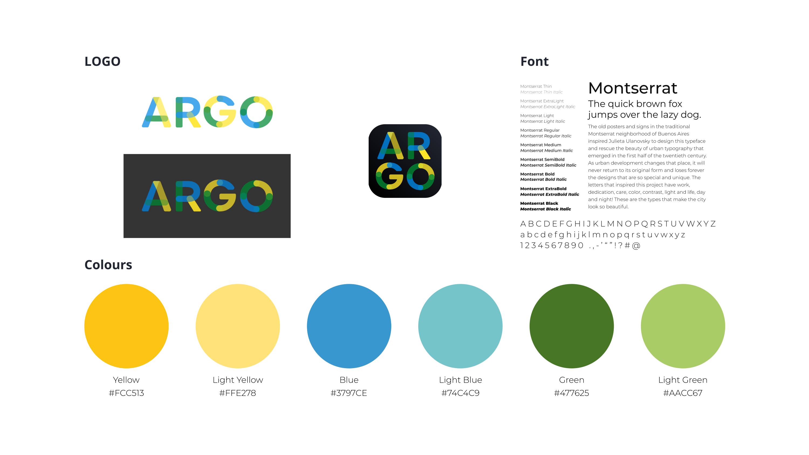

ARGO
UX/UI Design/ App development
-
type
Mobile Application
-
team
Group10
-
role
UX/UI designer
App developer -
duration
2021.01 ~ 2021.04
problem statement
Due to COVID-19, we are facing unprecedented circumstances, and during this time, people are regulated to stay home and not meet people by the policy. People do not have much of the daily enjoyment and pleasure that they are used to have. Even though we are adapting and changing, we would still like to feel a little of normalcy. Therefore, this app is designed to offer entertainment for its users to enjoy the little things in our city within our capacity of safety measures.
research
MUMA| Milan - Museum of Augment Urban Art
An example of use of AR on the art in the city.
How Museums are using Augmented Reality
Overall explanation of AR and possibilities of the use of AR in historical sites.
Change in ex exercise habits during the coronavirus
A survey of doing exercise after pandemic.
Early effects of the COVID-19 pandemic on physical activity and sedentary behavior in children living in the U.S.
A survey result of physical activity of children in the US after COVID-19.
More Canadians will be working from home post-pandemic, StatCan data suggests
COVID-19 and its effect on the exercise and activity.
The impact of COVID-19 on small business outcomes and expectations
findings
First, after COVID-19, people are more staying home and more likely to be less active. Also, it has negative impacts on the small businesses because people are tending to stay home.
Second, AR on art and historical tourism is growing and can be a new chapter in the tourism industry. It is a meeting of traditional tourism and new technology. When seeing the examples, it is giving a unique experience to tourists and audiences, getting attention when they are using it.
In this regard, we thought about using AR to restore the historical sites that are destroyed and lost their shapes in the city.
objectives
- to build ideas about the smart city
- to integrate tech and city
- to encourage people more active
- to have educational aspects
- to create a mobile application
- to have minimal steps
We concluded to connect history and the city with AR. History is a big part of tourism, and cities have their own stories. However, developing the cities led destroying at the same time. So, we thought about restoring the old buildings in our hands digitally and encouraging people to explore the cities.
personas
Jennifer Smith
Age
29
Profession
Office Worker
Daily Activities
She is an office administrator at an accounting firm.
She has been working from home since the pandmic.
She lives alone by herself with her pet dog.
She is comfortable using a computer and considers herself as tech-savvy.
She is on the screen/web for 10 hrs a day.
She takes her dog out for 10 mins of walk everyday.
Pain Point
She has been gaining weight due lack of activity.
She has been feeling lack of motivation and feels that she has not been out in the sun.
She lives alone by herself with her pet dog.
She feels bored and isolated with lack of interaction due to COVID.
Needs
She needs to physical activity and bit of entertainment.
Sun light and fresh air.
John Park
Age
21
Profession
Student
Daily Activities
He is a full time psychology student at Ryerson University
He has been taking 6 classes per semester.
He spends more 10 hours a day on school classes and homework.
During his free time, he watches Netflix and plays 3D video games such as Among Us.
He lives with his parents and one younger sister.
Pain Point
He is not getting any physical exercise.
He feels a little bit addicted to smartphone as he is spending too much time on on his phone.
The social isolation starting to make him feel social anxiety even when he participates in his virtual class.
Needs
He needs overcome anxiety by being around other people but still following the Covid-19 protoco.
He needs outdoor activities to stay physically active.
Amanda Williams
Age
35
Profession
House Mom
Daily Activities
She is a stay at home mother who takes care her kids 24/7.
She cleans, grocery shops and makes the meal for her family all day long.
She lives with her husband, and 2 young children, aged 5 and 6.
She like to do family activities with her family.
She also helps her children to stay focused during their virtual class.
Pain Point
She feels tired all the time because she does not rest till the kids sleep.
Her kids always want to go outside but there is not no activity available.
She lack of outdoor activities even for hersel.
She feels that everyday has become too much routine.
Her kids are over energize and she cannot keep up.
Needs
She wants time for herself outside the house.
She wants family activities to do with her whole family.
He need new ways to keep her kids outdoor in social bubble.
brain storming
-
01
User Explores
How can we encourage users to go out.
02
User Education
How can we give information about historical site of the users’ city.
-
03
Business of tourism
How can we promote local tourism.
-
04
Additional questions
How can we put more entertaining factor on the app?
How about we put pedometer on the app?
ideation

-
Interface Space
- It is supposed to be developed as an mobile application about history and city.
-
Core User Needs
- Maps: Maps with searching location function about historical sites data.
- AR layers: Information and images of the sites.
- Camera: Take a picture with the AR image laye.
- Sending messages: Sending the pictures with the messages to the users friends.
-
Requirements
- Functional requirements: Landing Page, Map page, Search bar, AR of Historical Site, Camera page, Social media share
- Non-Functional requirements
The system should operate on mobile devices.
The app home screen should appear within 3 seconds after launch.
The system should track users location.
The system should access to users camera
The app will generate native share function
Information Architecture

userflow

journey map

wireframe

Design inspiration


Entertainment
Learning
Technology
We firstly collected images to shape our project. In this process, we chose colours and keywords about our thoughts on the project and categorized the three primary keywords and colours.
design library

final design
 High Fidelity Wireframe
High Fidelity Wireframe
development
I had a variety of concerns to make the app and chose a cross-platform framework called React Native and Flutter. The OS for smartphones is mainly Android and iOS, both of which are based in different languages and required to work twice in two languages to create a mobile app, but with the advent of cross-platforms, developers can make an application with one language that works on two different OS. Between Flutter and React Native, I chose Flutter because it can provide a unified user experience in each operating system and is relatively easy to learn and use. Also, Material design by Google can be applied immediately for layout and UI design.